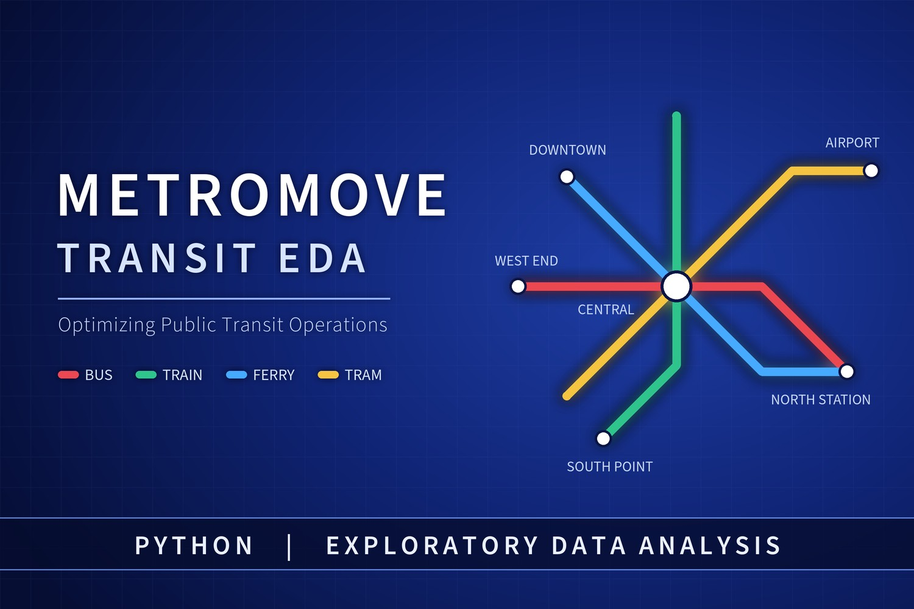

MetroMove Public Transport EDA

Python: Optimizing Public Transit Operations, an end-to-end exploratory data analysis of 1,000 public transport trips across Bus, Train, Ferry and Tram for MetroMove Transit Solutions. The project turns a messy, incomplete trip log into an analysis-ready dataset, then uncovers the demand, fare, route and revenue patterns behind recommendations for pricing and capacity planning.
Tools & Skills
- Python, pandas & NumPy for cleaning and transformation
- missingno for missing-value profiling
- Group-median imputation & IQR outlier checks
- Matplotlib, Seaborn & interactive Plotly visualisations
- Jupyter Notebook with inline commentary
Approach
The raw dataset of 1,000 trips and 12 columns was profiled for shape, data types and inconsistencies, then cleaned: stray whitespace and inconsistent casing were fixed, collapsing 9 raw mode labels into 4 modes and 7 station values into 6, and dates and times were standardised, including an arrival date for overnight trips. The 300 missing values (10% across three columns) were imputed with group medians, so each estimate reflects similar trips rather than the dataset as a whole.
Descriptive statistics and outlier checks confirmed the cleaned data was sound, and univariate, bivariate and multivariate Plotly charts then explored how demand, fares, routes and revenue vary by mode, station and day.
Key Findings
- Sunday is the peak. Sunday records the highest demand of the week with 167 trips, while Thursday is the quietest at 118.
- Thursday costs the most. Thursday has the highest average fare for every transport mode, despite having the lowest volume.
- Central drives revenue. Central station leads revenue for every mode, generating about £293k of the £1.25m total.
- Pricing ignores distance. Fares show no relationship with trip duration (r ≈ −0.05) and are broadly similar across modes, which points to fixed route pricing.
- Tram is under-used. Tram carries only 13.8% of trips against 33.2% for Bus, so it is flagged for a network coverage review.
Data Quality Finding
Every insight depended on fixing the data first. Inconsistent naming would have split the same station or mode into several categories, and dropping incomplete rows would have discarded 10% of the evidence. Group-median imputation kept all 1,000 trips, and a 1.5 × IQR boxplot check showed no outliers in passenger count, fare or trip duration, so no values needed capping or removal. The project closes by recommending validation at the point of entry and controlled vocabularies for modes and stations, so these issues do not recur.
Outcome
Five recommendations tied to the evidence: explore distance-based pricing, add Bus and Tram capacity on Sundays, run a tram route-coverage analysis, review frequency on the thinnest routes into North Station, and introduce a data governance framework. Weekend capacity and tram coverage are flagged as the most urgent.